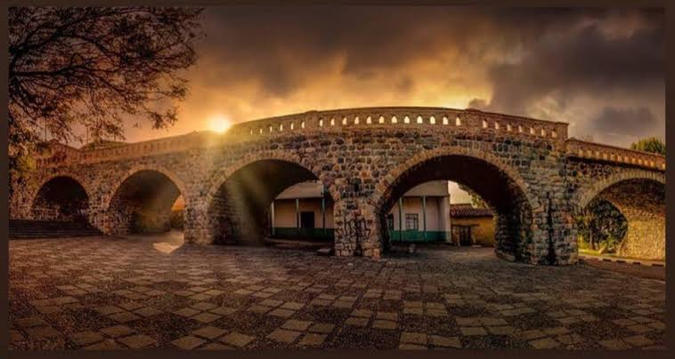
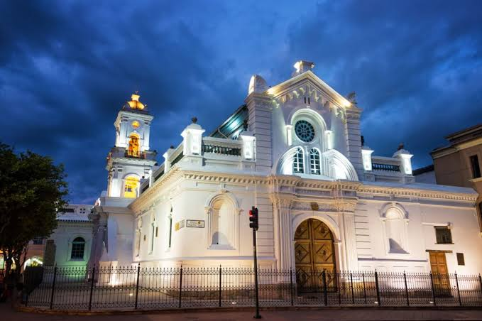
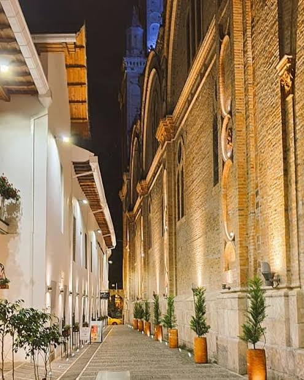

Fue un puente colonial que quedó parcialmente destruido por una crecida del río Tomebamba. Hoy es uno de los lugares más fotografiados.
Patrimonio Cultural de la Humanidad
Antes de la llegada de los españoles, el valle donde hoy está Cuenca fue habitado por el pueblo cañari y luego conquistado por los incas, que levantaron la ciudad de Tomebamba. Con la conquista española, el lugar fue refundado y con el tiempo se convirtió en un importante centro cultural del país.
Durante la época colonial, la ciudad creció alrededor de su plaza principal, con iglesias, conventos y casas de estilo español. Esa herencia se mantiene hasta hoy y es una de las razones de su valor patrimonial.
Estos son cuatro hechos clave de su historia:
Estos tres lugares reflejan el pasado colonial de la ciudad y se pueden visitar caminando por el centro.

Fue un puente colonial que quedó parcialmente destruido por una crecida del río Tomebamba. Hoy es uno de los lugares más fotografiados.

Es la iglesia más antigua del centro, construida en la época colonial. Hoy funciona como museo y espacio cultural.

Es una de las calles empedradas del centro histórico, junto a la Catedral de Cuenca. De noche se ilumina y es un lugar muy agradable para caminar
Hoy Cuenca combina su historia con la vida moderna. Sus museos, calles y fiestas tradicionales, como la fundación de la ciudad en abril y la independencia en noviembre, mantienen viva la memoria de sus habitantes.